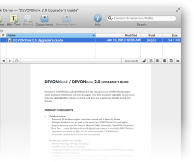

|
|
Office documents, email, and others |
|
Documents that DEVONthink Pro Office cannot render natively are displayed using QuickLook. But while you have to press the Space bar in the Finder to open a QuickLook head-up display, DEVONthink Pro Office previews these documents directly in the view/edit pane like any other document format.  Among others, the following document types are shown though QuickLook:
For some document formats the preview allows you to select and copy text, for other formats it doesn't. If DEVONthink Pro Office is able to interpret and convert the document format, you can use the Text View/Preview button in the navigation bar to switch to a text view that allows you to select, copy, and drag text.
Toolbar For document previews based on QuickLook, DEVONthink Pro Office offers a number of toolbar items, e.g., for accessing the Scripts menu , moving back and forth through the other documents contained in the same group or opening the document in its source application. Also you can switch to full-screen mode. Use Data > Open to open the document in a separate document window instead of in its source application. |